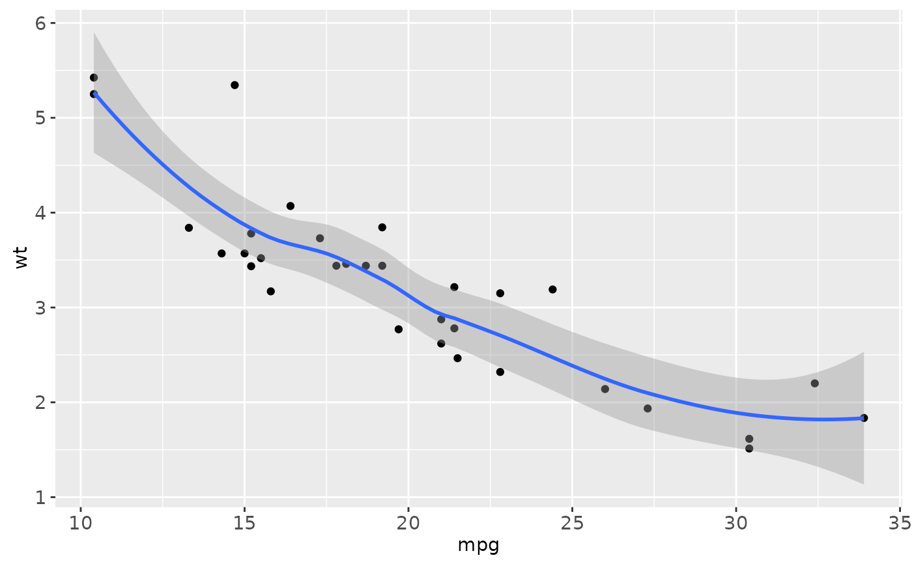
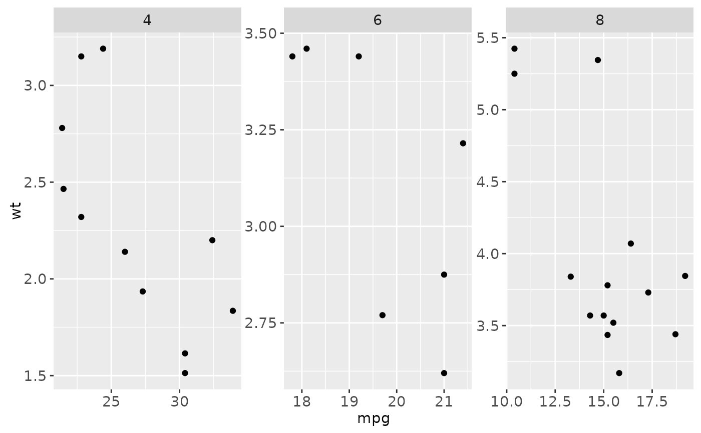

Translating between qplot and lattice
Source:R/translate-qplot-lattice.r
translate_qplot_lattice.RdThe major difference between lattice and ggplot2 is that lattice uses a formula based interface. ggplot2 does not because the formula does not generalise well to more complicated situations.
Examples
# \donttest{
library(lattice)
if (require("ggplot2movies")) {
xyplot(rating ~ year, data=movies)
qplot(year, rating, data=movies)
xyplot(rating ~ year | Comedy + Action, data = movies)
qplot(year, rating, data = movies, facets = ~ Comedy + Action)
# Or maybe
qplot(year, rating, data = movies, facets = Comedy ~ Action)
# While lattice has many different functions to produce different types of
# graphics (which are all basically equivalent to setting the panel argument),
# ggplot2 has qplot().
stripplot(~ rating, data = movies, jitter.data = TRUE)
qplot(rating, 1, data = movies, geom = "jitter")
histogram(~ rating, data = movies)
qplot(rating, data = movies, geom = "histogram")
xyplot(wt ~ mpg, mtcars, type = c("p","smooth"))
qplot(mpg, wt, data = mtcars, geom = c("point","smooth"))
}

# The capabilities for scale manipulations are similar in both ggplot2 and
# lattice, although the syntax is a little different.
xyplot(wt ~ mpg | cyl, mtcars, scales = list(y = list(relation = "free")))
qplot(mpg, wt, data = mtcars) + facet_wrap(~ cyl, scales = "free")

xyplot(wt ~ mpg | cyl, mtcars, scales = list(log = 10))
qplot(mpg, wt, data = mtcars, log = "xy")
xyplot(wt ~ mpg | cyl, mtcars, scales = list(log = 2))
qplot(mpg, wt, data = mtcars) +
scale_x_continuous(trans = scales::log2_trans()) +
scale_y_continuous(trans = scales::log2_trans())
xyplot(wt ~ mpg, mtcars, group = cyl, auto.key = TRUE)
# Map directly to an aesthetic like colour, size, or shape.
qplot(mpg, wt, data = mtcars, colour = cyl)
xyplot(wt ~ mpg, mtcars, xlim = c(20,30))
# Works like lattice, except you can't specify a different limit
# for each panel/facet
qplot(mpg, wt, data = mtcars, xlim = c(20,30))
#> Warning: Removed 22 rows containing missing values (geom_point).
# Both lattice and ggplot2 have similar options for controlling labels on the plot.
xyplot(wt ~ mpg, mtcars, xlab = "Miles per gallon", ylab = "Weight",
main = "Weight-efficiency tradeoff")
qplot(mpg, wt, data = mtcars, xlab = "Miles per gallon", ylab = "Weight",
main = "Weight-efficiency tradeoff")
 xyplot(wt ~ mpg, mtcars, aspect = 1)
qplot(mpg, wt, data = mtcars, asp = 1)
# par.settings() is equivalent to + theme() and trellis.options.set()
# and trellis.par.get() to theme_set() and theme_get().
# More complicated lattice formulas are equivalent to rearranging the data
# before using ggplot2.
# }
xyplot(wt ~ mpg, mtcars, aspect = 1)
qplot(mpg, wt, data = mtcars, asp = 1)
# par.settings() is equivalent to + theme() and trellis.options.set()
# and trellis.par.get() to theme_set() and theme_get().
# More complicated lattice formulas are equivalent to rearranging the data
# before using ggplot2.
# }